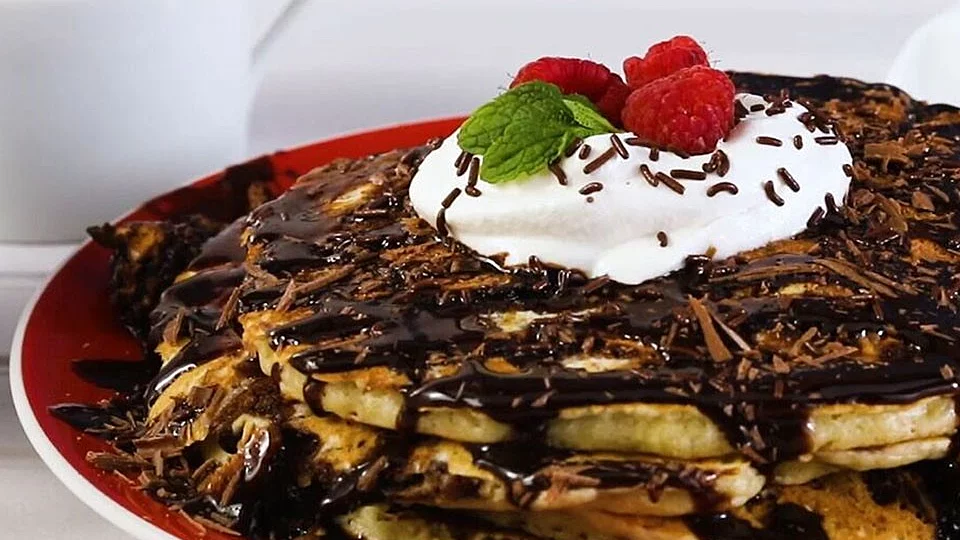

Brookie Pancakes Recipe

Description
This brookie pancake recipes has a prep time of 20 min
and a cooking time of 31 mins, which makes in total a 56 mins recipe, with 6 servings.
Per saving: 749 calories; protein 10.4g; carbohydrates 93g; fat 40g; cholesterol 104.8mg; sodium 747.9mg.
Ingredients:
Pancakes
- 1 cup all-purpose flour
- 2 tablespoons white sugar
- 1 teaspoon baking powder
- ½ teaspoon baking soda
- ½ teaspoon salt
- 1 cup buttermilk
- 1 egg, beaten
- 2 tablespoons butter, melted
- 1 teaspoon vanilla extract
- ¼ cup semisweet chocolate chips
Brownie Swirl
- 1 (18.25 ounce) package brownie mix (such as Betty Crocker®)
- ½ cup vegetable oil
- 2 eggs
- ¼ cup water
Steps:
- Preheat oven to 350 degrees F (175 degrees C). Line a 9-inch baking pan with parchment paper; grease parchment paper with cooking spray.
- Whisk flour, sugar, baking powder, baking soda, and salt together in a bowl.
- Combine buttermilk, egg, butter, and vanilla extract together in a small bowl, beating to break up the egg. Add flour mixture; stir until just combined. Fold chocolate chips gently into the batter. Allow batter to rest for 5 minutes.
- Combine brownie mix, oil, eggs, and water in a large bowl; whisk together until smooth.
- Pour 1/2 cup of the brownie batter into a squeeze bottle, pastry bag with a small round tip, or large resealable plastic bag with corner snipped off. Reserve remaining batter.
- Heat a large nonstick skillet over medium-low heat. Drop 1/3 cup pancake batter into the skillet, shaking skillet to spread batter evenly. Drop 5 nickel-size dollops of brownie batter over the pancake; swirl using a skewer or knife edge. Cook until edges are dry, 2 to 3 minutes. Flip and cook until set on the other side, 1 to 2 minutes. Repeat with remaining batters.
- Pour reserved brownie batter into the prepared pan.
- Bake in the preheated oven until a toothpick inserted into the center comes out clean, 28 to 30 minutes. Cool on a wire rack before slicing.